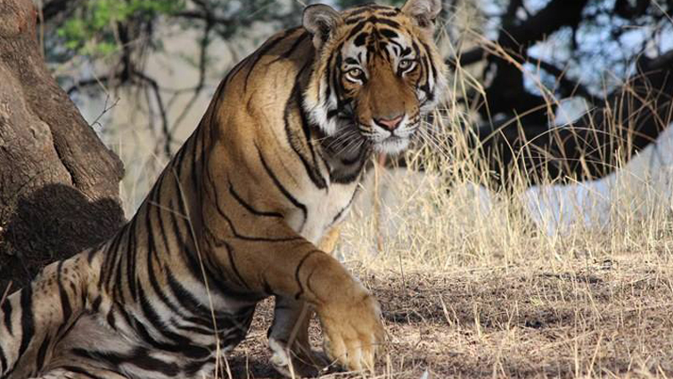

There are a lot of amazing facts about wild life but we will look at few.
Astonishing Facts About Tigers
20 Facts You Probably Did not Know About Tigers. Tigers are often looked
as being one of the most beautiful yet ferocious animals and perhaps
this is a sole driving factor that makes them even more interesting
creatures. But sadly, they have come to a verge of being categorized as
endangered, thanks to the human sloppiness and prudence. As a wildlife
lover with keen interest on large cats, I enjoy visiting wildlife
sanctuaries but the question remains, how well do I or we know about
this exotic animal? We are often clouded by many misconceptions with
other large cat species, but hopefully, you will learn something about
them through this blog where I have listed some facts about tigers.
Spoiler alert - you would be knowing some of the facts already but what
the hell!

- Tigers are the largest amongst other wild cats
- A punch from a Tiger may kill you 
- Tigers are nocturnal animals
You probably knew this that Royal Bengal Tigers are the largest amongst other wild cats but did you also know that the male Tigers weigh up to 300 kilograms. Jezz! That is like weighing a group of six average human. All they have to do is sit on top of you licking their paws, you would be dead instantly.
Tiger Punch Pose Leaving aside Tigers enormous body size, just look at their front-hands/legs, if you have a pet Tiger and a brutal enemy, you might as well send them for a fist fight. Kidding, you cannot have a pet tiger, it illegal! It is said that one swipe from a Tigers front hand is enough to kill a person or an animal, or at least break the preys bones.
It is not necessarily true that all Tigers are nocturnal but yes, they do prefer engaging in most of their hunting activities at night. The reason behind this is that Tigers prefer avoiding human conflict during daylight and also patrol around their territory at night.
To read more about this amazing facts click on the link below
Astonishing Facts About Tigers